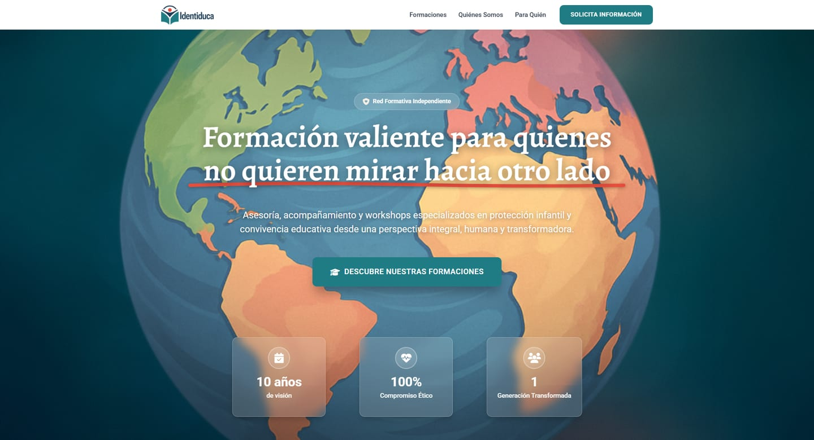
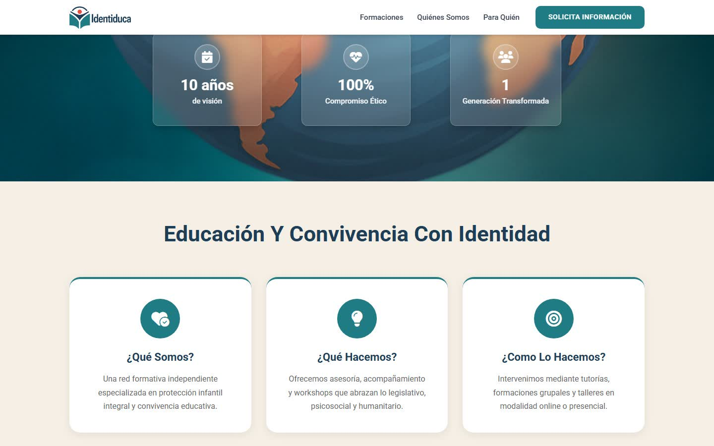
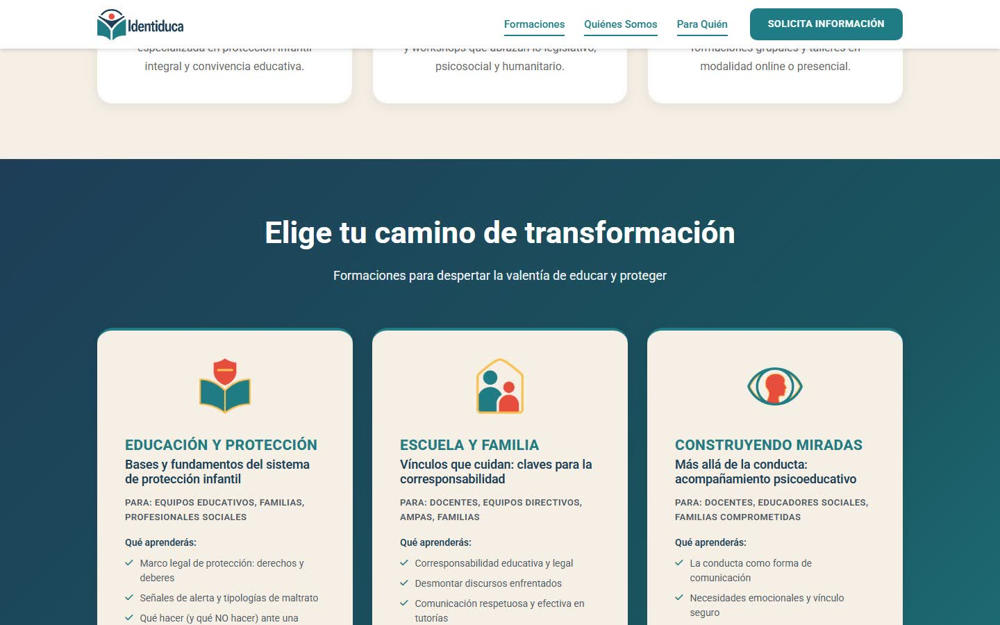
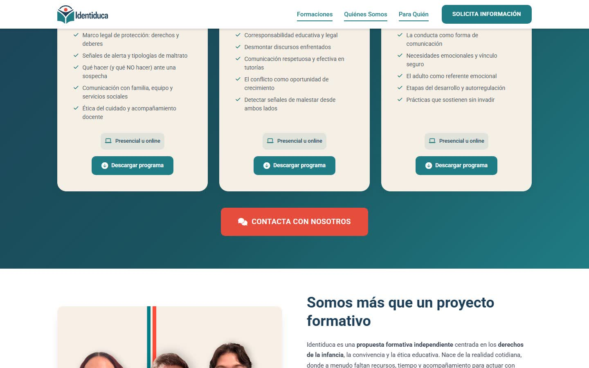
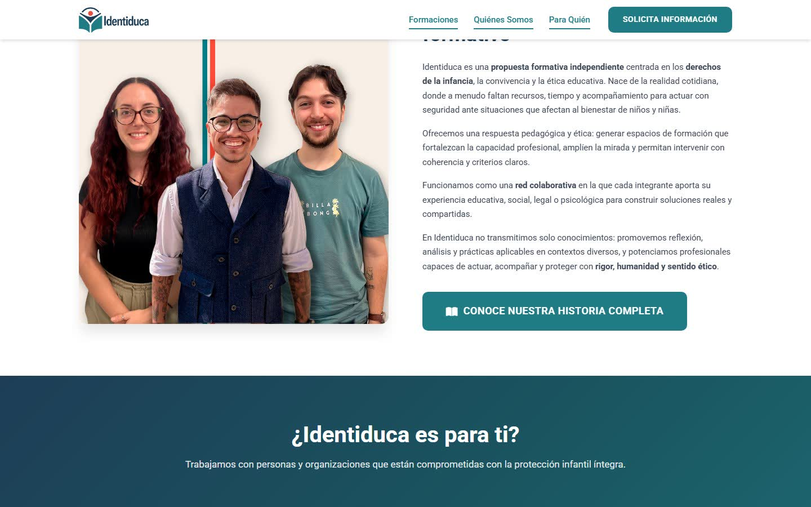
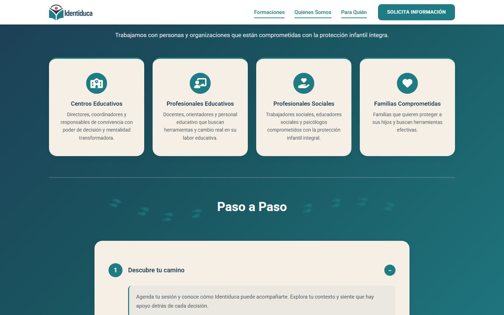
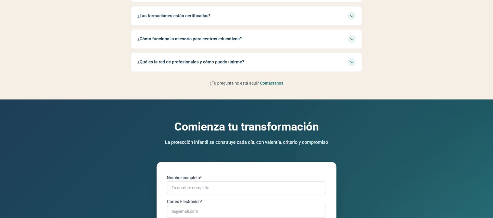
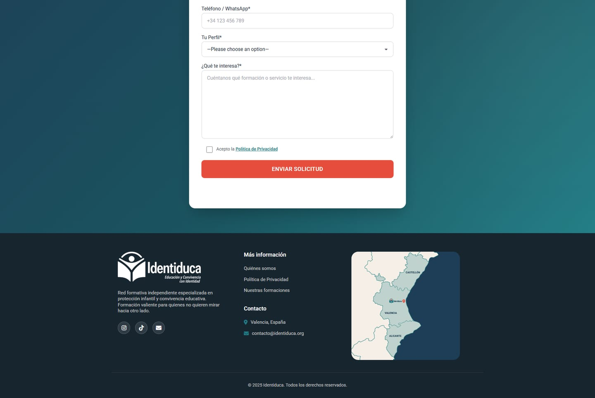

Identiduca

Formación valiente
Identiduca es una red formativa independiente de Valencia especializada en protección infantil y convivencia educativa. Ofrece asesoría, acompañamiento y talleres para centros educativos, profesionales y familias.
- Desafío
- Presentar un tema delicado con seriedad y calidez a la vez, y ordenar una oferta para públicos muy distintos (direcciones de centro, docentes, profesionales sociales y familias) en un recorrido claro hasta el contacto.
- Solución
- Un sitio con una ilustración del mundo en la portada y el lema «Formación valiente para quienes no quieren mirar hacia otro lado». Las formaciones se presentan como tarjetas con público, contenidos y programa descargable; una sección «¿Identiduca es para ti?» habla a cada perfil, y un paso a paso, las preguntas frecuentes y un formulario que pregunta el perfil cierran el recorrido. Verde azulado y crudo con acentos en coral.
- Mi rol
- Diseño, desarrollo y copywriting: escribí los textos del sitio y lo construí como un tema propio de WordPress.
- Resultado
- En línea desde 2025 en identiduca.org, con contenido que el propio equipo sigue ampliando. La colaboración continuó en 2026 con una zine impresa.







Créditos
Cliente
Identiduca
Año
2025
Servicios
Diseño web · Desarrollo · Copywriting
Mi rol
Diseño · Desarrollo web · Copywriting
Tecnología
WordPress · Tema a medida
Sitio